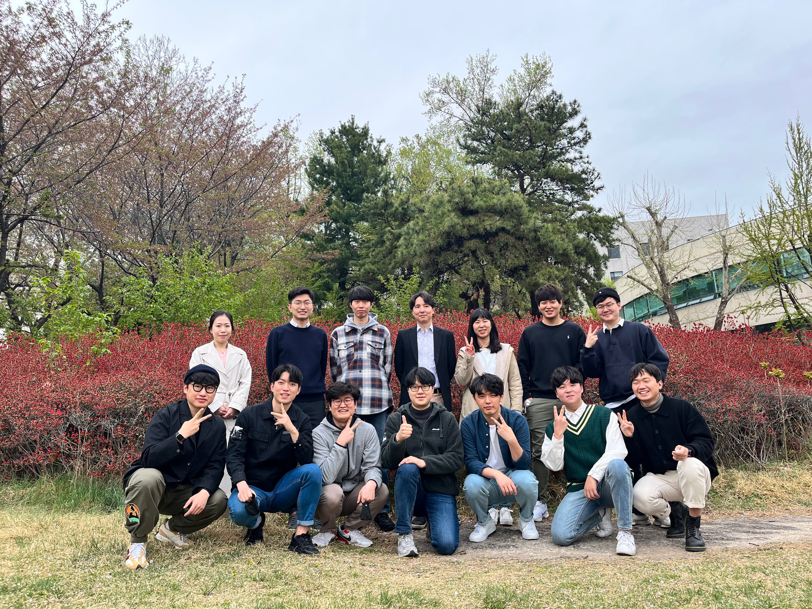
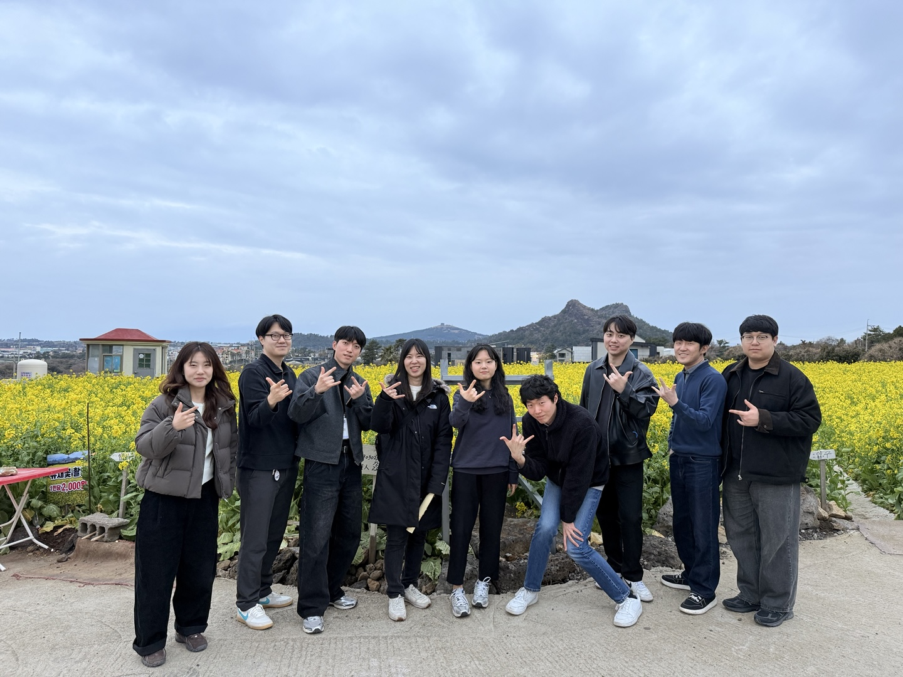
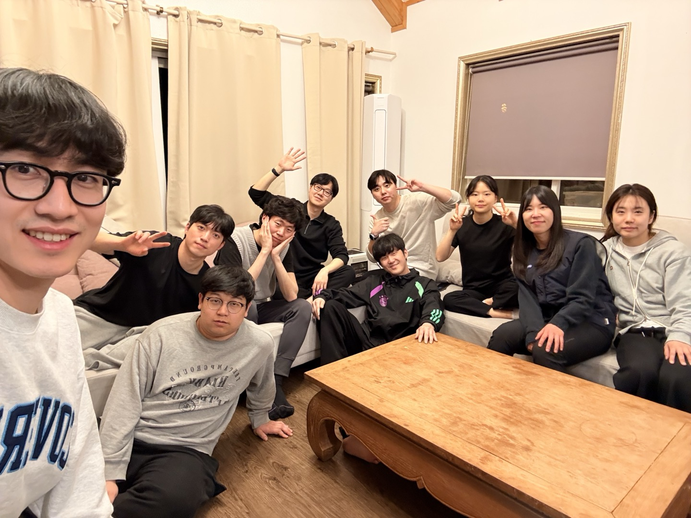
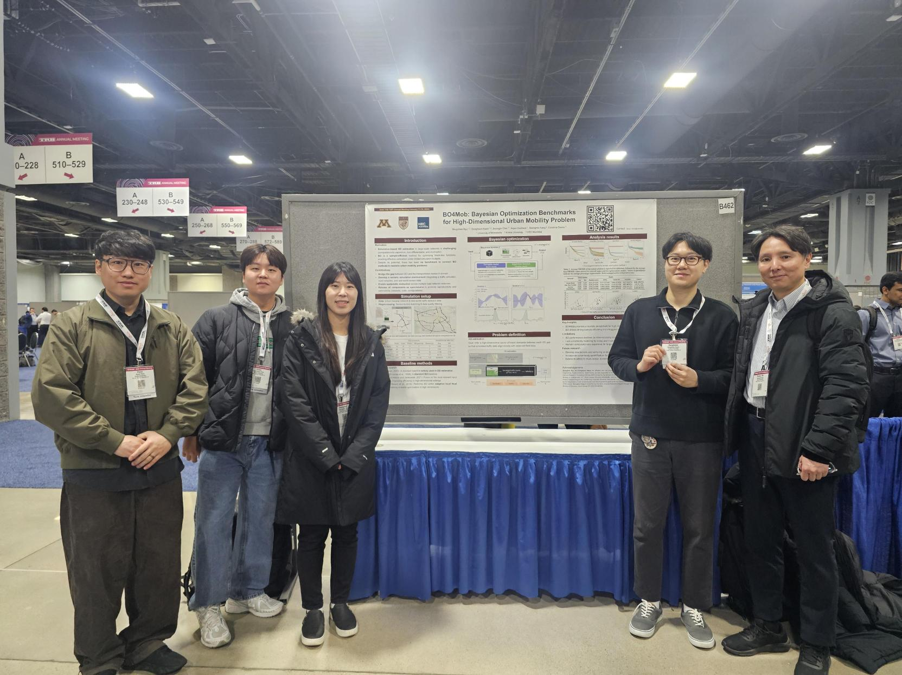
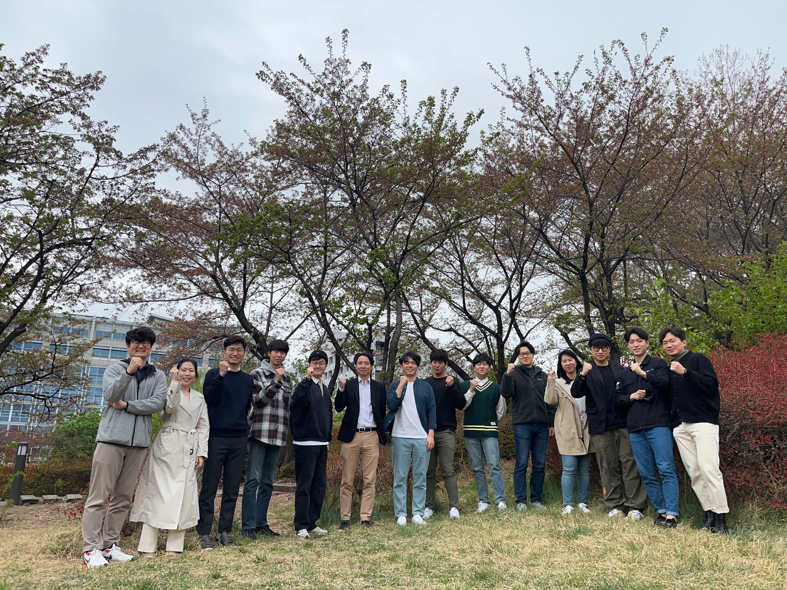

빈 회색 블록을 실제 단체사진으로 교체. 사진 위에 어두운 그라데이션을 깔아 글씨가 잘 보이게 합니다. 방문자가 첫 화면에서 "실재하는 연구실"임을 바로 느끼게 되는 게 가장 큰 효과입니다.

스마트 모빌리티 운영·계획 연구실
고려대학교 건축사회환경공학부
SMOP 연구실은 스마트 교통 및 물류 체계에 여러 가지 최적화 기법과 데이터 분석을 적용하여 그 효율성을 증대시키는 데 목적을 두고 있습니다. 특히 AI, 빅데이터, 머신러닝 등 최신 기술 및 Operations Research 등 다양한 분야와의 융합을 통해 지속가능한 모빌리티 체계의 구축에 관한 연구를 진행하고 있습니다.
강승모 교수 소개첫 화면에서 글과 사진을 나란히. 큰 제목만 덩그러니 있는 대신 소개 문장이 바로 읽혀서, 무엇을 하는 연구실인지 즉시 전달됩니다. 사진을 나중에 교체하기도 쉬운 구조입니다.
고려대학교 건축사회환경공학부
교통과 물류 시스템의 문제를 수리 모형과 최적화로 풉니다. 대중교통 노선 설계, 수요응답형 모빌리티, 물류 네트워크 최적화를 중심으로 지속가능한 모빌리티 체계를 연구합니다.
연구 분야 보기
2026.07 — 7월 정구홍 박사님 세미나 및 MT를 진행했습니다.
거대한 배너 없이 제목·소속·소개문으로 바로 시작하고, 아래에 작은 사진 3장을 띠로 둡니다. 화려함은 덜하지만 가장 "진짜 연구실 홈페이지" 같은 인상이고, 내용이 쌓일수록 잘 어울립니다.
교통 및 물류 체계에 최적화 기법과 데이터 분석을 적용하여 효율성을 높이는 연구를 수행합니다. AI, 빅데이터, Operations Research를 융합해 지속가능한 모빌리티 체계를 설계합니다.


교통 계획 및 운영 · 물류 최적화 · 지능형 교통체계 · 대중교통체계 · 교통 경제 및 투자 분석
위쪽은 흰 배경에 제목·소개글, 그 아래 가로로 긴 사진 띠, 이어서 논문 수·프로젝트 수 같은 숫자를 배치합니다. 연구실 규모와 성과가 첫 화면에서 드러나는 게 장점입니다.
고려대학교 건축사회환경공학부 · 교통과 물류 시스템의 문제를 수리 모형과 최적화로 푸는 연구실입니다.

41
국제 학술논문
23
진행·완료 프로젝트
16
현재 연구실 구성원
23
졸업생
교통 계획 및 운영 · 물류 최적화 · 지능형 교통체계 · 대중교통체계